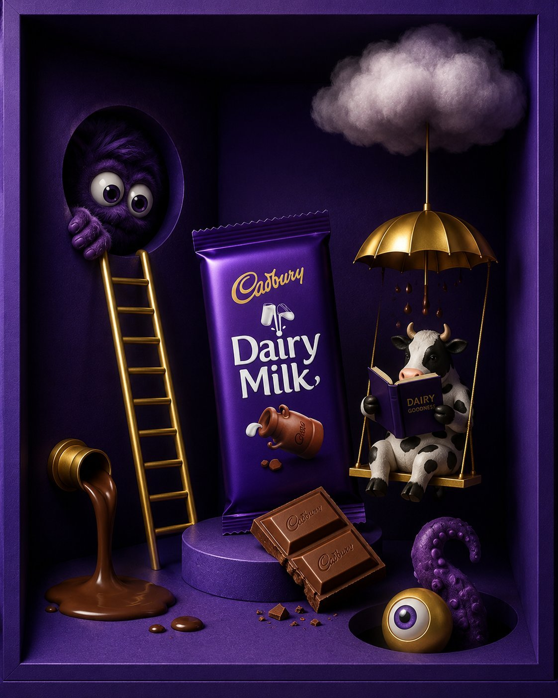
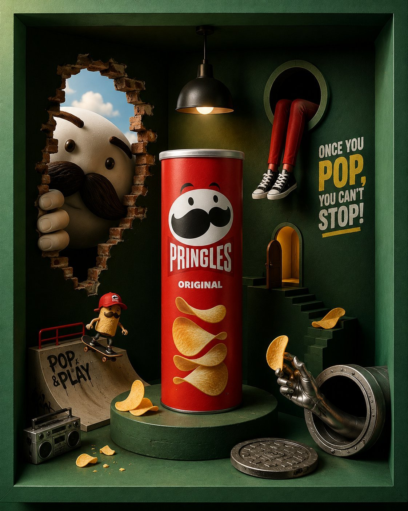

Snacks in Surreal Boxes
KitKat, Cadbury and Pringles each set inside a boxed miniature diorama with ladders, clouds and tiny workers, from a structured art-director prompt for GPT Image 2.
| Creator | Mira @miratechtool |
|---|---|
| Platform | X |
| Model | GPT Image 2 |
| Likes | 317 |
| Posted | 2026-05-20 |
| Visual style | Commercial / ad look |
| Regional vibe | No specific region |
| Genre | Product Food |
| Mood | Lighthearted |
Prompt · from the author's reply
ACT AS: A world-class luxury commercial art director, surreal product photographer, cinematic set designer, and premium AI advertising stylist creating hyper-detailed boxed-diorama brand ads for famous snack and candy brands. STYLE DIRECTION: Luxury surrealism × editorial product photography × miniature cinematic world × modern premium advertising CORE CONCEPT: Create a highly stylized premium advertisement for [BRAND NAME OR PRODUCT] designed entirely inside a cinematic shadow-box / miniature display box. The product must feel like the hero object of a tiny surreal world filled with strange, playful, luxurious, and visually addictive storytelling details. VISUAL STYLE: - Matte color palette with ultra-rich vibrant tones - Dynamic contrasting colors - Show-off luxury color combinations - Deep cinematic shadows - Soft volumetric lighting - Hyper-detailed textures - Premium studio photography look - Sharp focus with subtle depth of field - Editorial-level composition - Clean but complex - Minimal text only - Every corner should contain visual storytelling COMPOSITION: - Entire ad built inside a realistic boxed diorama - Product placed hero-center - Multiple tiny surreal objects surrounding the product - Add weird playful objects related to the brand theme - Include hidden storytelling details - Use layered depth and asymmetrical balance - Make the scene feel handcrafted and immersive OBJECT IDEAS: - Floating clouds - Tiny ladders - Mini doors - Hands coming from walls - Floating eyes - Tiny workers - Melting chocolate streams - Surreal pipes - Small creatures - Mini staircases - Oversized buttons - Floating geometric objects - Tiny furniture - Funny miniature scenes - Strange holes in walls - Retro lamps - Floating smoke - Hidden characters LIGHTING: - Dramatic studio spotlight - Warm cinematic highlights - Matte reflections - Soft ambient glow - Rich shadows - Luxury commercial lighting TEXT: - Very minimal typography - One short slogan only - Sharp and memorable - Integrated naturally into the environment QUALITY: Ultra realistic, hyper detailed, cinematic, premium advertising quality, editorial product photography, surreal realism, 8K, extremely polished, visually addictive, modern luxury ad campaign aesthetic. NEGATIVE PROMPT: No cheap layouts, no clutter, no low detail, no flat lighting, no generic stock look, no empty background, no blurry product, no random unrelated colors, no messy composition. EXAMPLE BRANDS: KitKat, Hershey’s Kisses, Pringles, Oreo, Coca-Cola, Pepsi, Nutella, Cadbury, McDonald’s, Starbucks, Doritos